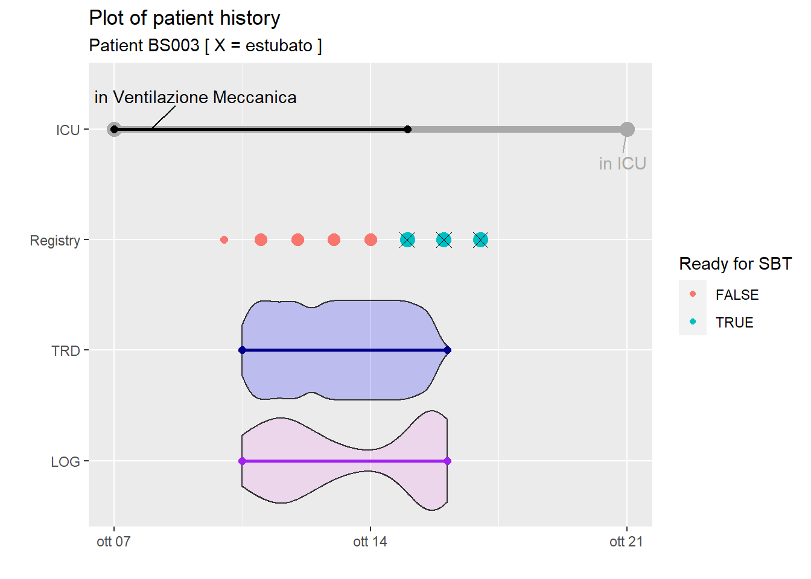
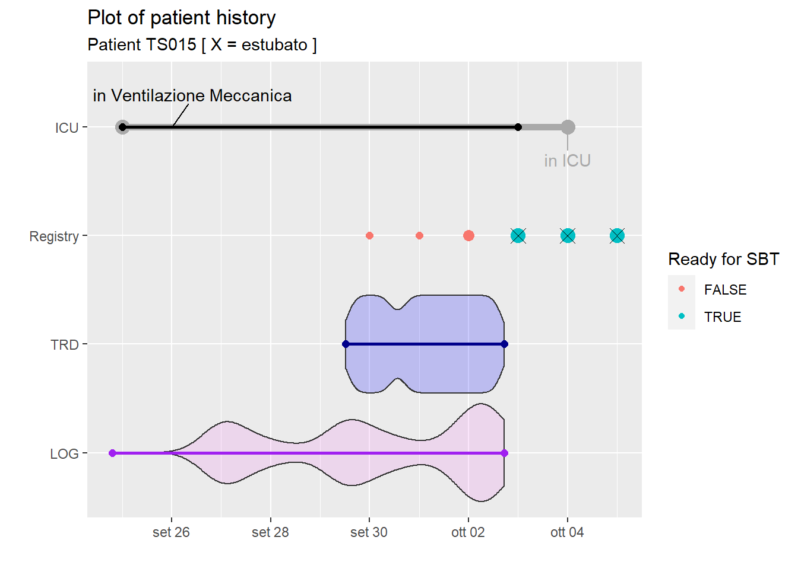

First of all, data should be manipulated to be ready for the model train, test and validation. Since the model should support discussion at 7am at the morning briefing, 24h prior to that meeting will be transformed in multidimensional arrays.
TRD 24h Array ( weaning_attempt, parameter, time)
For TRD, only 3-dimensions are needed:
Weaning attempt, obtained combining Patient id (~180 possible values) and the Day of the attempt
Mechanical ventilation parameter, each containing one of the ~32 features recorded each minute by the ventilator
Time, with ~1440 with each line representing a minute in the 24h from 7:01am to 7:00am the following day
First of all, let’s reduce the problem to only two patients (BS003and TS015) and a handful of TRD variables ( freq_spontanea_resp_min, edi_min_m_v e press_di_pausa_vie_aeree_cm_h20)
Di cui si procede a visualizzare la storia clinica
patient_history_plot("BS", 3)

patient_history_plot("TS", 15)

Pezzo di codice sperimentale per rompere un tibble in un array (due livelli)
T <-matrix(1:60, ncol=6) %>%as_tibble() %>%mutate(id_pat = (V1 <6) )
Warning: The `x` argument of `as_tibble.matrix()` must have unique column names if `.name_repair` is omitted as of tibble 2.0.0.
Using compatibility `.name_repair`.
S <- T %>%group_by(id_pat) %>%group_split( .keep =FALSE ) %>%lapply(FUN = as.matrix)A <-abind(S, along =3)
A questo punto si applica al tibble con i dati dei pazienti